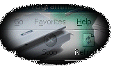

|
CREATIVE CUSTOM PRODUCTS website is now complete. Stop by and take a look at
http://www.creativecustomproducts.com. Added: 7-4-99
BACK ONLINE - Staff.Net is now back online with a new internet connection, after the fire that
destroyed the Staff.Net computer center on June 2. Thank You for your patience during this time. Added 7-2-99
EXPANDED OFFICES - Staff.Net is now located at the
corner of 8th and Pennsylvania Avenue in downtown Sheboygan. The new address is 501 N 8th Street Suite 5, Sheboygan WI 53081. Added: 6-14-99
NEW FAX NUMBER - Please note our new fax number is 920.208.7959 not 920.208.6358. Added: 5-20-99
JOB OPENINGS - Staff.Net is currently looking for a sales person.
This position offers great bonuses and compensation. You may work from your house also. No need to be local to Sheboygan.
For more information email luke@staff.net
REGISTER A DOMAIN - FREE! - Register your own domain
for FREE plus Internic Fee($70 2years/$35 year after). Reserve it in minutes at Easy Domains!
|
Looking for orderpal? Click Here.
WEB DESIGN - Staff.Net develops custom cgi scripts and web pages for both businesses
and personal standpoints. We offer pre-made CGI Scripts to custom CGI scripts
to suit your needs and the needs of the business industry. Now with over 4 years of Experience, since January of 1995.
NETWORKING - Staff Networks now provides custom networking services. Such as Network wiring and
setting up of dedciated internet connections. Staff Networks Incorporated has 3
years of experience with all Livingston and MultiTech Equipment. We also have background
in Bay Networks, Adtran, 3com and many other major companies. If your company needs
wiring done, or even if you simply need ISDN wiring installed call Staff Networks
Incorporated Today at 920-208-6477!! This division of Staff.Net has partnered up with Dairy Land Services
Our commitment is to make the Internet and its content friendly and
accessible to all people, whether they be power users,
students, or casual surfers. We follow up on
that commitment by creating deceptively simple webpages
that are easy to use on the web and jam-packed
inside with the latest in cutting-edge information.
|
|
ISPs OutSource your WebPage Designing
Is your ISP/IPP looking to offer web page designing, but cannot afford
the upfront costs of employees or just do not want to worry about the hassels?
Staff.Net has the service for you click above to find out more.
|
|
Web Page Creation Service
Do you need a "killer website?" Do you want your information accessible to over
2 million people? Click here for more info.
|
|
|

|
Custom CGI Scripts
Many times those "FREE" cgi scripts just do not cut it for your
business or web page. They do not install or just do not have all those features
you want. Staff.Net can create that script to suit your needs to make both you and your
business happy and have a growing website. Contact us for
more information
|
|
WebCart Shopping Cart System 7.0
Add a shopping cart to your website within hours. This amazing software always you to be able
to manage your WHOLE store front from an admin interface. All version come with FREE installation. Stop by
and get your store online today!
|
|
|